1.认识Markdown
Markdown 是一种轻量级标记语言，它允许人们使用易读易写的纯文本格式编写文档，然后转换成格式丰富的 HTML 页面。 —— 维基百科
- Markdown 的目标是实现易读易写。
其语法全由一些符号组成，并且符号的作用一目了然。
语法目标：成为一种适用于网络的书写语言。
它的语法种类很少，只对应于 HTML 标记的一小部分。
理念是能使文档更易读、写和随意更改。 - 一般 Markdown 编译器的左边是编辑区，右边显示的样式是转换为 HTML 后加上 CSS 样式显示的。
- 同理在 Hexo 博客中，Markdown 文章需要解析成 HTML 格式，再输出到网页中。
2.Markdown和HTML
- HTML 是一种发布的格式。
- Markdown 是一种书写的格式，其格式语法只涵盖纯文本可以涵盖的范围。
- 不在 Markdown 涵盖范围之内的标签，都可以直接在文档里用 HTML 撰写。
3.特殊字符自动转换
①HTML中
- 在 HTML 文件内，有些字符需要特殊处理(相当于”转义”)，才能使用。
如<符号用于起始标签，&符号用于标记HTML实体。
要想单纯的显示这两个字符原型，必须要使用实体的形式，即避免它们被当成标签的一部分。 - 字符实体有三部分：一个
&符号、一个实体名称或#和实体编号、一个;。
如：<==<==<||&==&==&。
链接内、网址名中的&也是要转换成实体后，再放到<a>标签的herf属性中去。
②Markdown中
- 而 Markdown 可以让我们自然地书写字符。
你只需正常的写，Markdown 编译器会进行判断，然后在生成 HTML 代码时自动转换，无须编写者关注。 - 即如果使用的
&是 HTML 字符实体的一部分(即是标识实体的特殊字符时)，它会保留原状，*否则自动转换成&*。 - 或如果把使用的
<作为 HTML 标签的定界符使用，它会保留原状，否则自动转换为其实体名。
4.区块元素
①段落与换行
- 一个 Markdown 段落的前后要有一个以上的空行(即无文本行)。
若一行只包含空格和制表符，则该行会被视为空行。 - 与 HTML 的空格和换行设定一样，不管换(空)多少行(格)，只一个符号有效。
可以用 HTML 标签实现多个换行与空格功能。
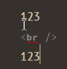
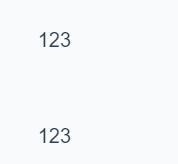
②标题
- Markdown 支持两种标题的语法，
类Setext和类atx形式。类setext形式：用底线的形式，=表示一级标题，–表示二级标题。类Atx形式：在行首插入1-6个#，对应1到6级标题。
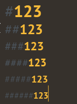
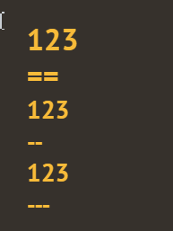
- 作为美观,可以在行尾使用
#闭合类atx样式的标题。
③区块引用
- Markdown 文件中建立一个区块引用，每行的最前面加上
>。 - 区块引用可以嵌套(例如：引用内的引用)，只要根据层次加上不同数量的
>。
引用的区块内也可以使用其他的 Markdown 语法，包括标题、列表、代码区块等。
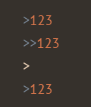
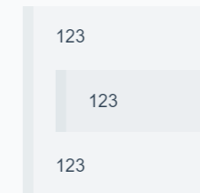
④列表
- Markdown 支持有序列表和无序列表。
- 无序列表使用
*、+或-接一个空格作为列表标记。 - 有序列表则使用
数字接.再接一个空格作为列表标记。
- 无序列表使用
- 如果要在列表项目内放进引用,那就需要缩进：
空格+ 两个Tab为宜。
- 1
- 2
- 3
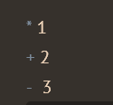
- 1
- 2
- 3

⑤分隔线
- 在一行中用三个以上的
*、-、_可建立一个分隔线，行内不能有其他东东。
也可以在*或是-中间插入空格。 - ps：使用
---必须上下行都是空行，防止它作用在文字底部加粗文字。
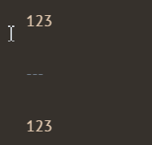
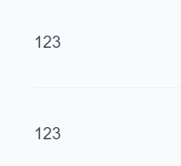
⑥表格
| Item | Value | Qty |
|---|---|---|
| Computer | 1600 USD | 5 |
| Phone | 12 USD | 12 |
| Pipe | 1 USD | 234 |
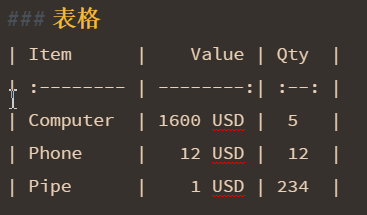
5.区段元素
①文字链接
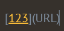
②强调
- Markdown使用
*和下划线_作为标记强调文字的符号。- 斜体：被一个
*或_包围的文字，会被转成用<em>标签包围。 - 加粗：用两个
*或_包围的文字，会被转成用<strong>标签包围。 - 加粗斜体：被三个
*/_包围。 - 删除线：被
~~包围 /<del>标签。
- 斜体：被一个
- 强调也可以直接插在文字中间。
- 但是如果你的
*和_两边都有空白的话，它们就会被当成普通的符号。
- 但是如果你的
- 如果要在文字前后直接插入普通的星号或底线，你可以用反斜线。
③代码
- 如果要标记一小段行内代码，你可以用
反引号把它包起来。
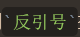
- 如果要标记多行代码：
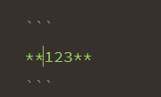
1 | **123** |
在代码区段内，
&和<都会被自动地转成 HTML 实体，这使得插入 HTML 原始代码变得很容易。代码区段中的Markdown 语法不会被转换，它们只是有高亮的普通文本。
④图片

Markdown 没有办法指定图片的宽高。如果需要，可以使用普通的
<img>标签。
⑤网址/邮箱链接
- 用尖括号包起来，Markdown 就会自动把它转成链接。
<http:messi1002.top>
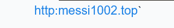
⑥反斜杠
- Markdown 支持以下符号前面加上反斜杠来帮助插入普通的符号：
即反斜杠可以转义 Markdown 中的特殊字符！
1 | \：反斜线。 |
- 如果想在行首出现
数字.空格，而不生成列表样式，可以在句点前面加上反斜杠。
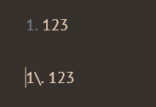
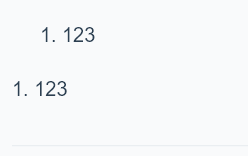
附录
- 我的个人博客：messi1002.top
- 如有错误或疑惑之处 请联系 wjymessi@163.com